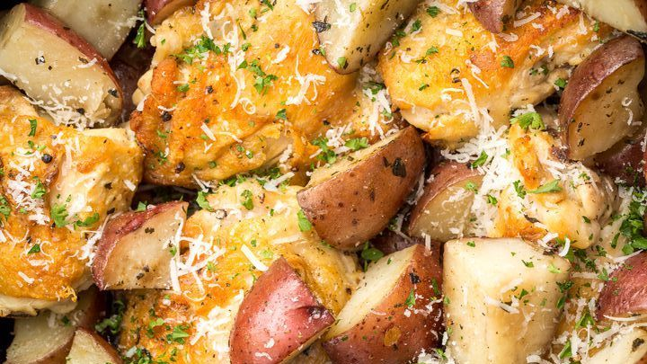

Slow Cooker Parmesan Garlic Chicken and Potatoes

Prep Time: 15 mins
Cook Time: 4 hrs
Total Time: 4 hrs 15 mins
Servings: 6-8
Ingredients
- 2 pounds potatoes, cut into 1 1/2- to 2-inch chunks
- 2 tablespoons olive oil
- 1 teaspoon kosher salt
- 3/4 teaspoon ground black pepper
- 1/2 teaspoon paprika
- 2 pounds skinless, boneless chicken breasts
- 1 cup creamy Parmesan garlic sauce, such as Buffalo Wild Wings® Parmesan Garlic Sauce
- 1/2 cup water or chicken stock
- 2 cups shredded mozzarella cheese
Directions
- Combine potatoes, olive oil, 3/4 teaspoons salt, 1/2 teaspoon black pepper, and paprika in the bottom of a slow cooker and stir until well coated. Add chicken pieces on top and sprinkle with remaining salt and pepper. Whisk Parmesan garlic sauce and water together in a bowl until well incorporated. Pour mixture over chicken and potatoes.
- Cook on High for 4 hours (or on Low for 6 hours), or until chicken is cooked through and potatoes are tender. During the last 20 minutes of cooking, add mozzarella and Parmesan and continue to cook, covered. Sprinkle with parsley to serve.
Nutrition Facts
Per serving: 566 calories, total fat 16g, saturated fat 6g, cholesterol 148mg, sodium 648mg, total carbohydrate 44g, dietary fiber 4g, total sugars 4g, protein 59g, vitamin c 22mg, calcium 307mg, iron 4mg, potassium 1404mg